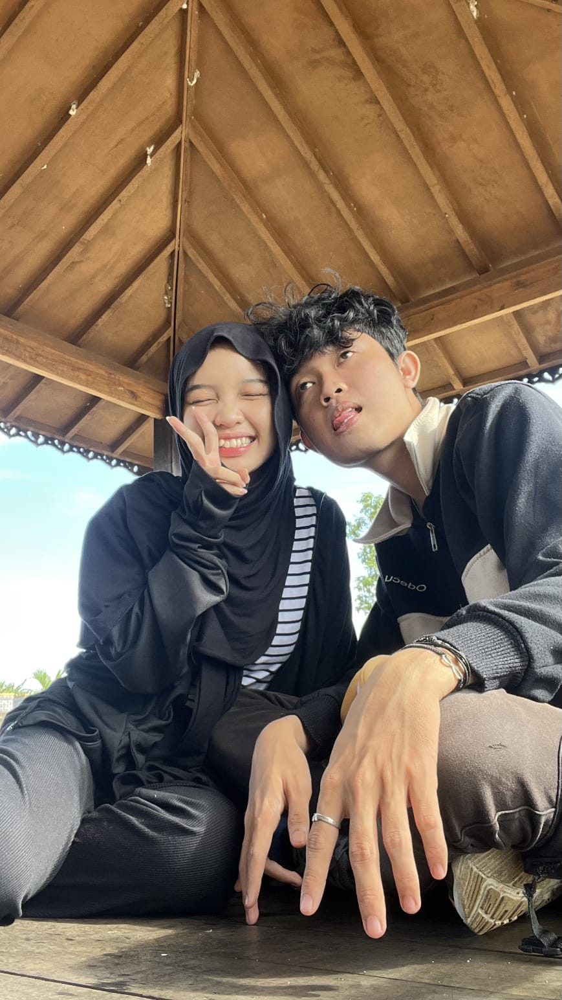
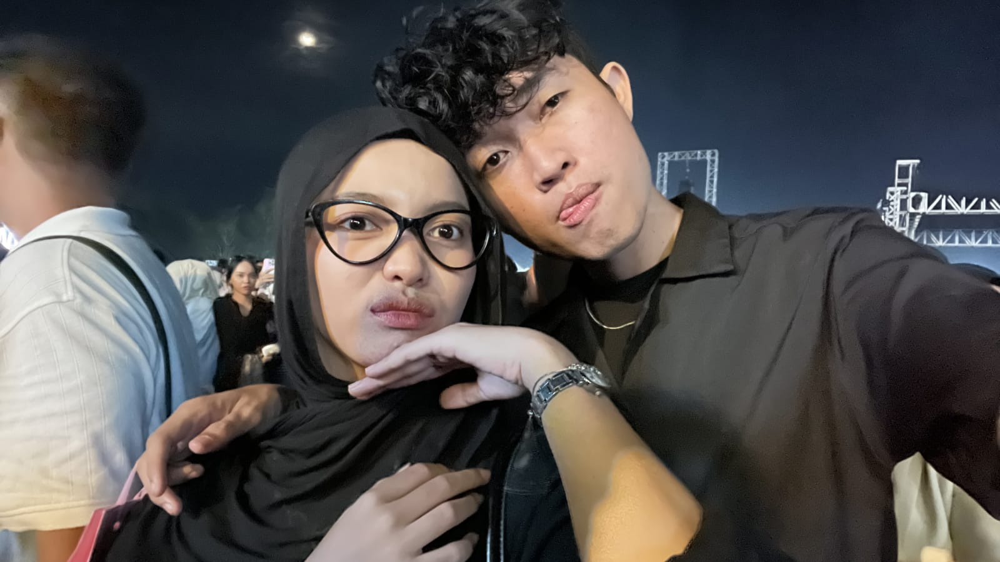
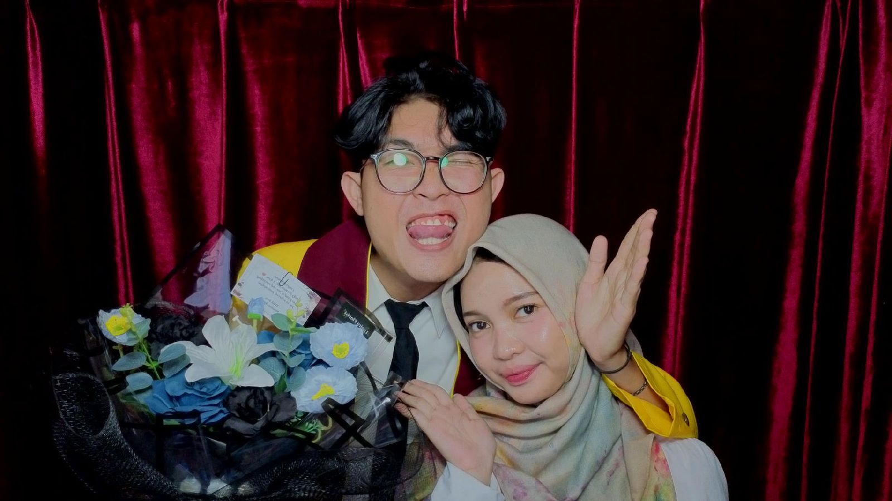
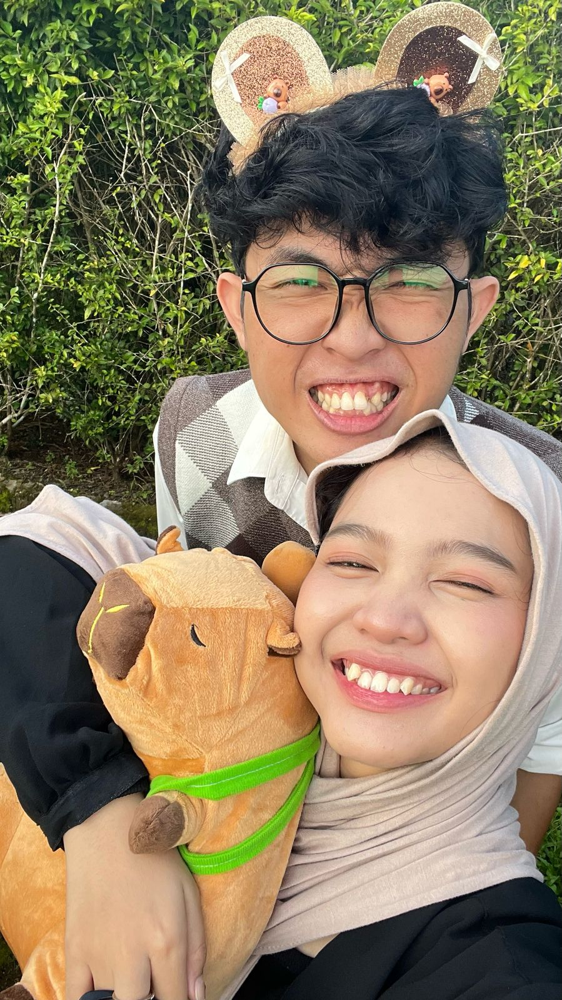

Pertama Kali Jalan Jauh
Ini jujur seruu banget, kapan ya kita bisa jalan-jalan lagi? Eh hari ini deng ayo kesituuu
Di chapter ini foto-foto kita pertama kali ngelakuin sesuatu, tapi harusnya masih banyak lagi nanti akan diupdate lagi deh sekalian minta tolong kamu cari cari foto kita
Exhibit 02

Ini jujur seruu banget, kapan ya kita bisa jalan-jalan lagi? Eh hari ini deng ayo kesituuu

Ini zuzur konser terseru sih, untung bole pulang lama wakakakakaak

INI HARUS MASUK BANGET JIR?!?! SOALNYA GUE S. KOM

Maaf yaa aku belum bisa bikin ultah seeffort kemarin, soalnya tahun ini lagi serettt banget doain aku lancar rezekinya